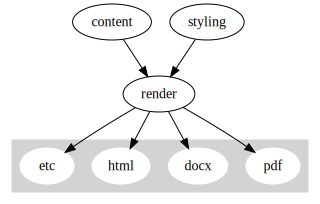
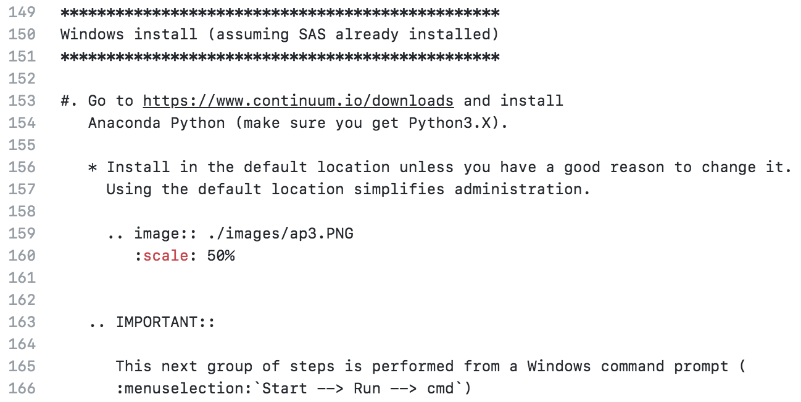
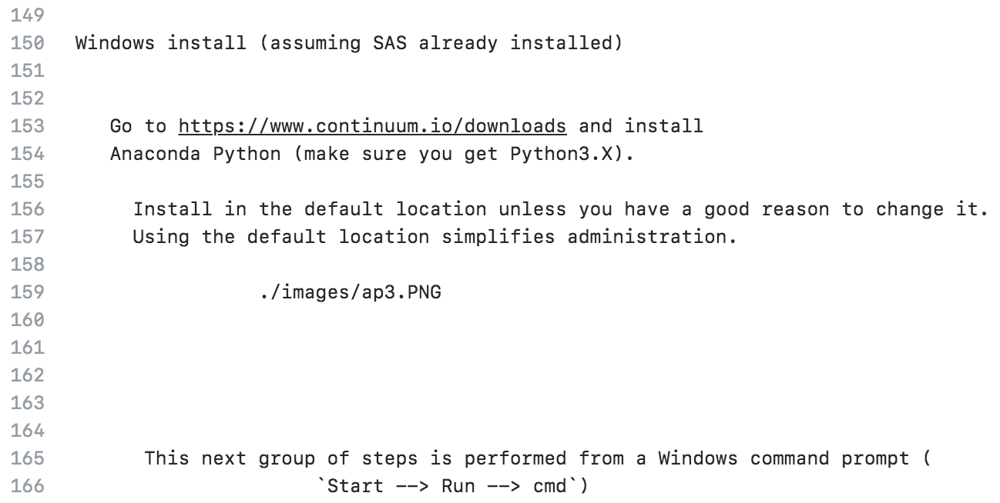
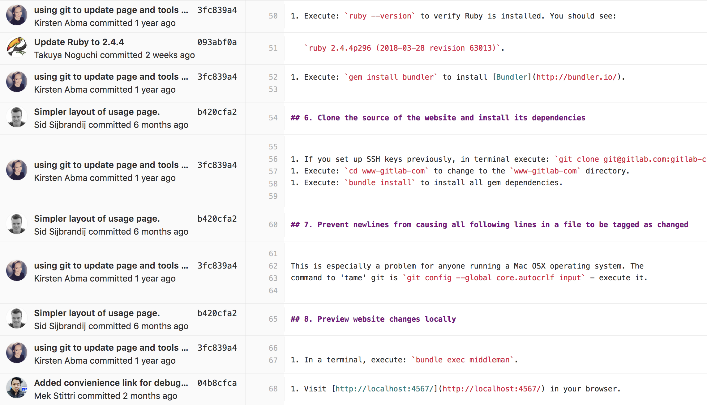
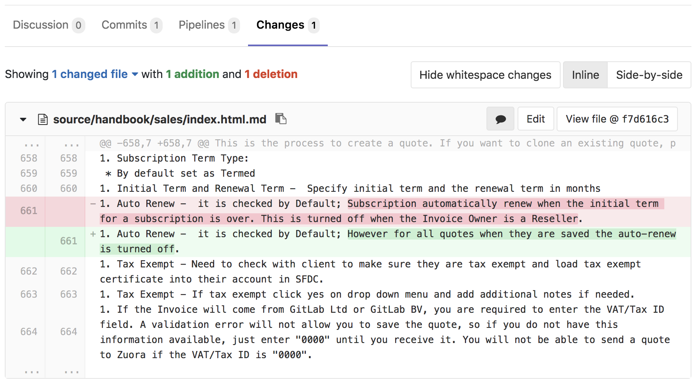
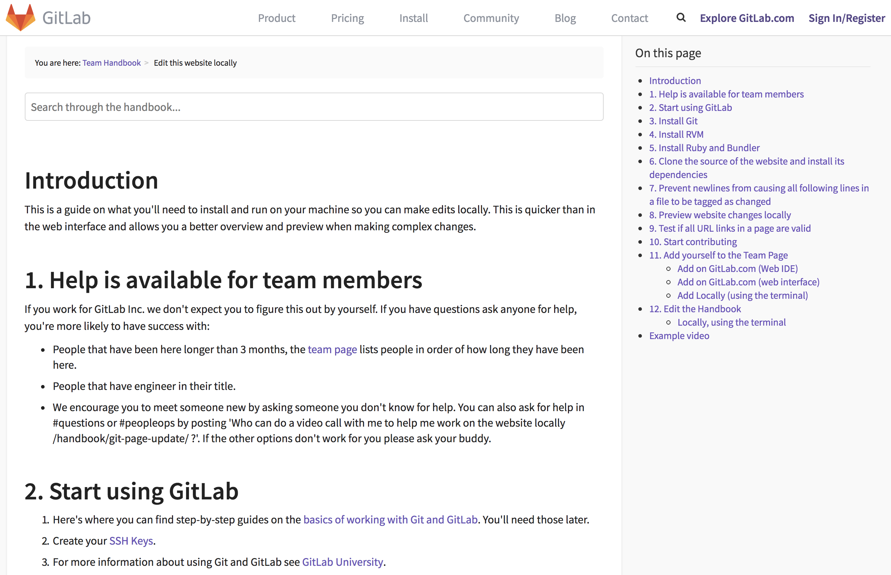
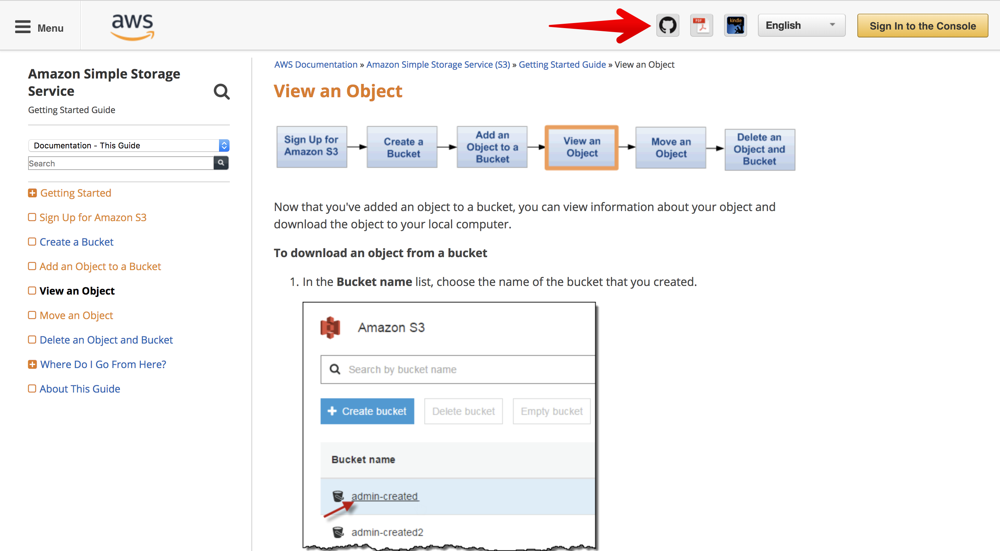

Documentation
as a Code
Igor Khorlo
June 28, 2018
PhUSE SDE
📍 Basel, Switzerland
The problem
Why do we need documentation?
- Standardize software usage
- Help users to get started
- Documents processes
How do you manage documentation?
- Do you use Microsoft Word?
- CMS?
- Sharepoint?
Right way
- Semantically maintain styles across a document
Wrong way
- Arial, 16pt, bold
- Times New Roman, 11pt
Disadvantages of WYSIWYG approach
- Keeping content and styling together.
- Hard to review changes over many versions (track changes).
- Hard to maintain several formats at once: HTML, DOCX, PDF, etc.
- Very hard to collaborate.
- Hard to automate.
Approach
Separation of concerns

Welcome to our community!
=========================
**Write the Docs** is a global community of people who care about documentation. Our primary gathering places are:
* :doc:`Our slack network </slack>` with thousands of members
* :doc:`Conferences </conf/index>` on 3 continents
* :doc:`Local meetups </meetups/index>` in over 30 cities
We consider everyone who cares about communication, documentation, and
their users to be a member of our community. This can be programmers,
tech writers, developer advocates, customer support, marketers, and anyone else who wants
people to have great experiences with software.
Our conferences create a time and a place for the global community of
:doc:`documentarians` to share information, discuss ideas, and work together
to improve the **art and science of documentation**.You can `join our Slack <http://slack.writethedocs.org/>`_ if you aren't already a member.
.. note:: Feel free to send a Pull Request to update `this page`_, if you want to include other channels.
.. _this page: https://github.com/writethedocs/www/blob/master/docs/slack.rst
Default channels
----------------
Everyone who joins the Slack will be added to these channels:
* **#general** - The main channel for documentation related conversation and questions.
* **#watercooler** - For talking about things that are off-topic. Get to know folks other interests that aren't around documentation :)
* **#jobs-posts-only** - Posting or asking for jobs.
* **#wtd-conferences** - Questions and other thoughts around the :doc:`/conf/index`.
* **#meetups** - Questions and other thoughts about our :doc:`/meetups/index`.
* **#intros** - Introduce yourself! Let people know you're here, and why you care about docs :)######################
Overview of SAS kernel
######################
.. I used http://documentation-style-guide-sphinx.readthedocs.io/en/latest/style-guide.html
*************
What is this?
*************
A SAS kernel for `Jupyter Notebooks <http://www.jupyter.org>`_. Jupyter Notebooks
are capable of running programs in a variety of programming languages and it is
the kernel that enables this ability. The SAS kernel enables Jupyter Notebook to
provide the following programming experience:******************
Load data into SAS
******************
The FILENAME statement is used to specify an external file. The
IMPORT procedure can read data from a variety of external file formats.
.. code-block:: none
filename x "./HR_comma_sep.csv";
proc import datafile=x out=_csv dbms=csv replace; run;Plot a heatmap that shows the relationship between employee
satisfaction and the last evaluation.
.. code-block:: none
proc sgplot data=work._csv;
heatmap x=last_evaluation y=satisfaction_level;
run;
.. image:: ./images/heatmap_satisfaction_evaluation.png
:scale: 60 %
:alt: Heatmap of employee statisfaction and evaluation.

Markup languages
- Markdown
- reStructuredText
- Asciidoc
Generators
- sphinx
- pandoc
- AsciiDoc
- DocFX — example, src
- Jekyll
- Docusaurus
- google for static site generators documentation
Benefits
- text editors (like Sublime Text, Vim, Emacs, Atom, Visual Studio Code, Brackets)
- version control systems (Git, Subversion, Mercurial)
- automation via Continuous Integration/Continuous Deployment
- spellcheck
- post/pre processing
VCS Blame

Pull requests

Real world examples
GitLab

GitLab Handbook

Amazon AWS S3 docs

The end
Contact info
Igor Khorlo